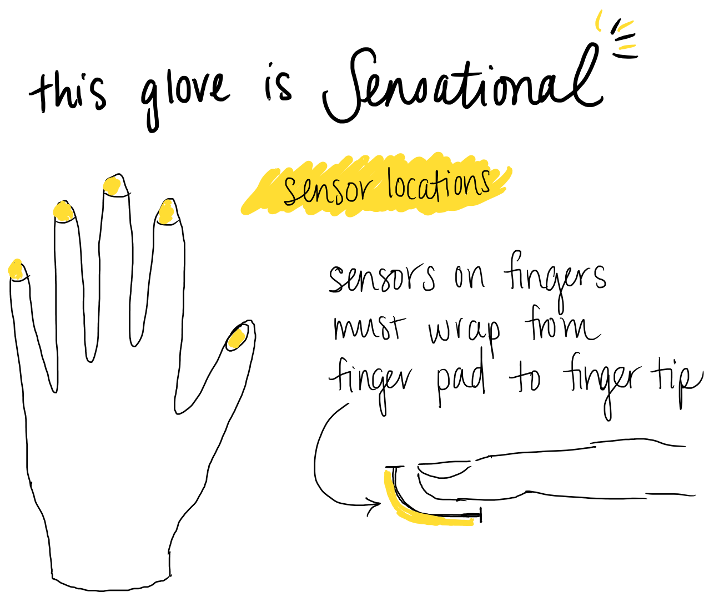
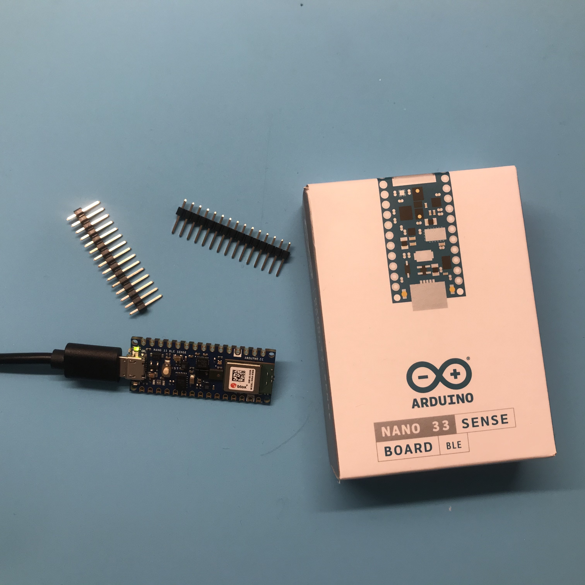

Final Project
PROPOSAL
Hand Dance at The Dance Complex in 2019 (Cambridge, MA)
Siobhan Butler performs The Blackbird with her fingers.
Up and Over It performs to 'We no speak no Americano'

My final project (and the reason I enrolled in this class) was motivated by my dissertation research, which is an ethnography of Irish dance transmission practices. Irish step dancers do this thing where they dance their steps with their hands. Ballet dancers do this too but usually use their whole arms to mimic leg movements. Irish dancers, on the other hand, use small movements of the hands, wrists, and fingers, to gesture percussive footwork through the air or while tapping against a table. In some circumstances, Irish dancers use two fingers on one hand and dance them against their thumb.
While I have movement-specific description and analysis at my disposal (Laban Movement Analysis) and could transcribe rhythmic patterns on a musical staff, I have been searching for a more precise way to describe what is going on when dancers dance with their hands. How closely do their hand gestures match the footwork it’s meant to represent? How do movement patterns (read: style) differ from dancer to dancer? And more generally, can I use the data to visualize what is going on in a way that is legible to people who are not Irish dancers.
What I propose is to create a glove that incorporates various sensors in particular areas of the glove (finger tips, thumb, possibly elsewhere) that will be able to measure movement through space over time, as well as instances where the dancer might be tapping a table (or tapping their thumb). Based on helpful suggestions from Nathan and Victoria, I anticipate experimenting with copper thread to create sensor pads on the thumb and finger tips and experimenting with the Piezo disc (for measuring taps), Hall sensors (for gesture), capacitive sensors, accelerometers and gyroscopes. My hope that some combination of sensors will help me map space/time/contact data. Something that I’m also thinking about is a way to “turn off” certain sensors based on the behavior of the dancer. So if a dancer uses just two fingers on a thumb, then perhaps other features of the glove are not as important, and they could be ignored without needing to change anything on the glove itself. I suppose that would just be a matter of ignoring certain output signals. As you can tell, I know very little and I’m excited to learn what is possible, what works, what doesn’t, and how it might all come together.
MICROCONTROLLERS AND SENSORS

Nathan helpfully pointed me in the directiion of an all-in-one microcontroller and IMU tha also has machine learning capabiliites, in case that is something I decide I will need: the Arduino Nano 33 Sense. This little board has tons of capabilities, including BLE/Bluetooth. It is too bad that it doesn't have wi-fi, but that is OK. This board let's me avoid unecessary wires or bulky layering of sensors and microcontrollers, which is key for any wearable, especially one that is going to be placed on the hands.
Here is my documentation for setting up the Arduino Nano 33 Sense.
PROTOTYPING THE GLOVE
MACHINE LEARNING
Machine learning tutorials using the Arduino Nano 33 Sense:
Machine Learning with Arduino and Tensorflow
Arduino and Tensorflow Gesture Recognition
VISUALIZING THE DATA
A major aim of this project is to produce data and use visualization methods to (1) assist in analyzing the data and (2) assist in representing the data to others. Hand dancing is somewhat legible to other dancers -- usually a dancer can tell what type of dance someone is marking out with their fingers or hands without any audible musical or verbal cues. But deciphering actual movements is more complicated. For a non-dancer (read: "Irish dancer"), these tiny gestures are confusing and almost completely illegible.
In Week 11, I started preliminary work with visualizing movement data using p5.
CIRCUITRY
Eventually, I will need to solder wires to my microcontroller. Luckily, I found our soldering iron in the depths of our unnecessarily large tool box AND there was solder in the bag. Magic.
I have soldered once in my life. I was 13 and did a summer program at our local technical high school. We rotated through the different trades that the school offered and one week was electronics. I soldered many little circuits that week, but alas did not remember much from that experience twenty years later. Arduino saved the day for me however with two very helpful guides on soldering:
Adafruit Beginner's Guide to Soldering Micrcontrollers
Adafruits guide to Excellence in Soldering (I hope that they have a special certificate for this)